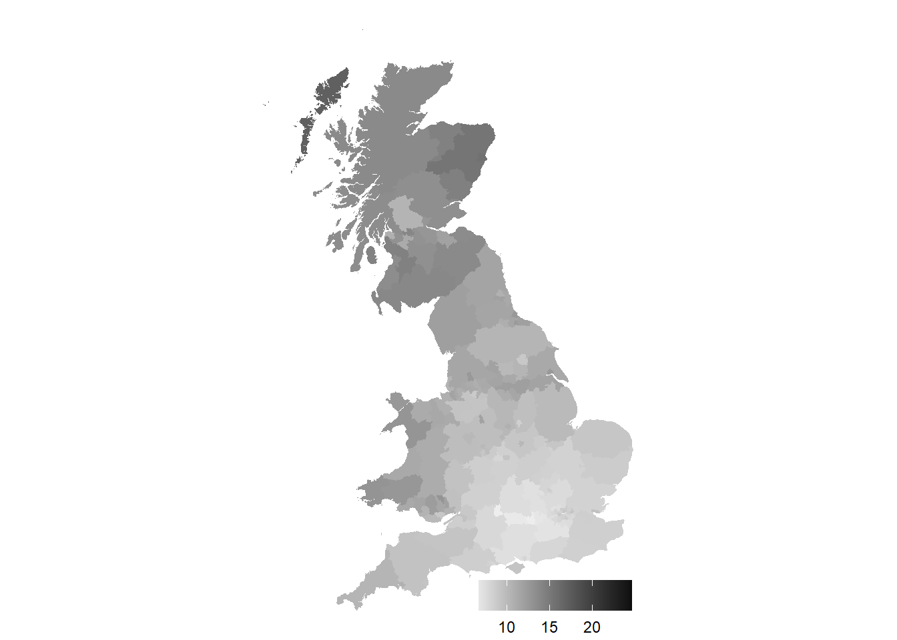

library(tidyverse)
library(readxl)
library(sf)5 Mapping regional house price inflation
5.1 How heterogenous is UK house price inflation?
A simple enough question, and one that Bahaj, Foulis, and Pinter (2020) thought was best answered with a map – actually a referee asked for one. As I know how to draw a map in R they asked me if I could do it. Well yes, but there are some particular difficulties.
- The UK (actually Great Britain) is an awkward (but not too awkward) shape.
- Population in the UK is heavily concentrated in a small number of centres, such as London or Manchester.
- There are three different periods to compare.
- It has to be in grayscale.
Before all of this we need some data, with boundaries that correspond to areas that we have data for. The regional inflation data is available at the level of the Land Registry, which almost by local authority but amalgamates a number of the areas. So a map at Local Authority level would be fine as long as we can amalgamate some of the regions.
The map data used here is available from the UK’s ONS geoportal, with a lot of administrative data available including local authority boundaries. The Local Authority data is specifically available from here, where I use the clipped full extent version. There are a number of possibilities, but in general high water mark, and enough but not too much detail is needed.
The information in the map file is comprehensive, and by Local Authority as of December 2015.
fle <- "LAD_Dec_2015_GCB_GB"
shape <- read_sf(dsn=".", layer=fle)We can look at the attributes using summary.
summary(shape) lad15cd lad15nm lad15nmw GlobalID
Length:380 Length:380 Length:380 Length:380
Class :character Class :character Class :character Class :character
Mode :character Mode :character Mode :character Mode :character
geometry
MULTIPOLYGON :380
epsg:27700 : 0
+proj=tmer...: 0 This can be plotted straightforwardly using ggplot.
shape %>%
ggplot() +
geom_sf(aes(geometry=geometry, fill=lad15nm),
color=NA, alpha=.66, show.legend=FALSE) +
theme_void()
Looking at the read-out above, each of the 380 regions have some metadata associated, which are contained in each of the listed attributes. It should be obvious that objectid is just a sequence from 1 to 380. lad15nm turns out to be a list of names of the regions – I suspect lad for Local Authority District, 15 for 2015 and nm for name – and it is easy to specify this as the name to use for the region when using tidy.
Now this can be plotted using ggplot, using geometry for the \(x\) and \(y\) coordinates. The choice of fill colour is determined by fill and we can set the colour of the lines by colour (or color). The two extra arguments are for a suitable blank style and to impose an appropriate ratio of height to width.
Immediately, the awkward shape of the British Isles is apparent. (Note this is a plot of Great Britain, and there is no Northern Ireland.) The islands to the far north are somewhat unnecessary, although quite rightly the inhabitants get a bit tired of being left off maps! Nonetheless I’ll do exactly the same by filtering out the polygons associated with Orkney Islands and Shetland Islands.
Fewer Scottish Islands makes the graphs a lot clearer with little loss of information, given the tiny number of transactions in the Orkneys and the Shetlands, very far to the north.
In what follows we filter out the islands using
shape <- read_sf(dsn=".", layer=fle) %>%
filter(!lad15nm %in% c("Shetland Islands","Orkney Islands")) %>%
mutate(Country=str_sub(lad15cd, 1, 1), .after=1)where we also create an indicator of country using the first letter of the code string.
So the country map is
shape %>%
group_by(Country) %>%
summarise() %>%
ggplot() +
geom_sf(aes(fill=Country), color="grey77", linewidth=.25, alpha=.66) +
theme_void()Note the really nice feature – if we group by something, in this case country, we can summarise to amalgamate the geometries!
You may have noticed, one thing that that’s missing on the LA graphs is the boundaries. They aren’t, they’re just invisible. That’s because I set colour = NA, so I can fix that by choosing a colour and making the lines very thin so they don’t swamp the map, as in the country one.
One further amendment, the fill is moved inside the aes() specification and made conditional. R now chooses unique colours for each of the regions.
Two things now need to be done to get the map colours right to illustrate regional inflation rates. First we need to amalgamate some of the Local Authority boundaries to the Land Registry definitions, and second we need to assign the inflation rate to each area.
5.2 Inflation data and regions
We have a map, and we have that data in a form that is easy to understand. If we can suitably attach an inflation rate to each area then we can fill the individual areas with a colour unique to each individual inflation rates.
Recall that the Land Registry areas aren’t quite what we have, and will need amalgamating. Bahaj, Foulis, and Pinter (2020) supplied me the areas that needed amalgamating (and the inflation rates) using the ONS codes. This is contained in the metadata lad15cd above.
The data is structured in ‘wide’ format with one row for each Land Registry region. The details aren’t very important for us now, but what it means is I can manipulate it to get
# Price data by Land Registry region, converted to long format
hp_data <- read_excel("house_price_data_figure_1.xls") %>%
select("land_reg_region", starts_with("e_"), starts_with("av_")) %>%
pivot_longer(names_to = "name",
values_to = "lad15cd",
cols = c(-land_reg_region, -starts_with("av_"))) %>%
drop_na() %>%
select(land_reg_region, lad15cd, starts_with("av_"))
codes <- hp_data %>%
select(lad15cd, land_reg_region) The important thing that the pivot_longer achieves is that for every land_reg_region I get a list of all the ONS codes that makes up the Local Authority level. So if I look at buckinghamshire as an example there are four ONS codes now associated with it.
filter(codes, land_reg_region == "buckinghamshire")# A tibble: 4 × 2
lad15cd land_reg_region
<chr> <chr>
1 E07000004 buckinghamshire
2 E07000005 buckinghamshire
3 E07000006 buckinghamshire
4 E07000007 buckinghamshireJoin these together
# Join polygons defined by Land Registry regions
gg <- shape %>%
select(starts_with(c("lad","C"))) %>%
left_join(codes, by="lad15cd") %>%
group_by(land_reg_region) %>%
summarise() which produces a match between the Land Registry and the Local Authority areas, plus the inflation rates.
5.2.1 Inflation in grayscale
All the information required to plot the Land Registry-based regional inflation rates is now available. As you can see from the buckinghamshire data above, there are three average rates in three different periods, so I’ll focus on one, 2002-2007 to begin with.
First, augment the geographic data with the inflation data, and call them something better.
gg %>%
ggplot() +
geom_sf(aes(geometry=geometry, fill=land_reg_region),
color=NA, alpha=.66, show.legend = FALSE) +
theme_void()Then specify gray and put the legend at the bottom.
nms <- gsub("av_hp_growth", "HPI", colnames(hp_data))
hp_data %>%
rename_all( ~ nms) %>%
select(land_reg_region, starts_with("HPI")) %>%
distinct() %>%
left_join(gg) %>%
ggplot() +
geom_sf(aes(geometry=geometry, fill=HPI_02_07),
color=NA, alpha=.66, show.legend = TRUE) +
theme_void() +
scale_fill_gradient(low=grey(0.9), high=grey(0.05)) +
theme(legend.direction = "horizontal",
legend.position = c(0.75,0.05),
legend.title = element_blank())Joining with `by = join_by(land_reg_region)`